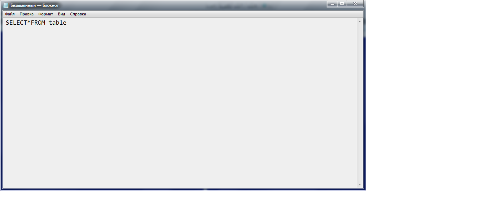
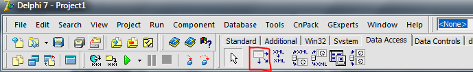

Query nima?
Demak Query so`rovnomaning asosiy strukturasi SELECT*FROM [jadval_nomi]
Masalan aytaylik bizda `bolalar` degan jadval bo`lsin va biz bolalar degan jadvaldan yoshi 8 dan katta bolalarni chiqaruvchi Query yozamiz.
`bolalar` degan jadvalda yosh degan ustunidan foydalanamiz.
SELECT * FROM bolalar WHERE yosh>8 ORDER BY fam
Bu Query so`rovnomada `bolalar` degan jadvaldan faqat yoshi 8 dan katta bo`lgan bolalarni ro`yxatini chiqarib beradi.
Hamda fam ustuni bo'yicha ya`ni Familiyasi bo`yicha saralaydi.
Jadval bilan bog`lash uchun DBGrid komponentasini ishlatamiz va oynaga joylaymiz.
DBGrid komponentasi bizga bazadagi ma`lumotlarni jadval ko`rinishida namoyish qilib beradi.
DataSource komponentasi bizga baza bilan aloqaga chiqishga yordam beradi.

Endi bizga quyidagi Query komponentasi kerak bo`ladi:
DataSource ning DataSet qismiga Query komponentasini quyidagicha belgilaymiz.
DBGrid komponentasining DataSource qismiga DataSource dan kelgan obyektni ko`rsatib o`tamiz.
Query ning SQL degan joyiga quyidagicha o`zgartirish kiritamiz.
DatabaseName degan qismiga esa o`zimizning bazamizni yozib qo`yamiz.
Mening bolalar degan jadvalim malumotlarbazasi.db faylida saqlangani uchun DatabaseName ga malumotlarbazasi.db ni ko`rsatib qo`ydim.
Agar kodni ichida foydalanmoqchi bo`lsangiz quyidagi kodni yozish kerak bo`ladi:
with form1.qyr1 do begin
Close; //Avvalgi so`rovnomani tugatish / yopish.
SQL.Clear; //Avvalgi so`rovnomani tozalash
//SQL ga yangi so`rovnomalarni jo`natish
SQL.Add('SELECT fam, ism, yosh');
SQL.Add('FROM bolalar');
SQL.Add('WHERE');
SQL.Add(' yosh > 8 ');
SQL.Add('ORDER BY fam');
Open; //So`rovnoma bajarilishini faollashtiramiz.
end;